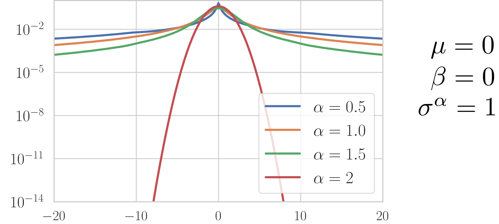

Evaluation seminar, multispeech team
Multichannel $\alpha$-Stable models for Signal Processing
October 2nd, 2019

Work by : Mathieu Fontaine, now Univ. Kyoto, Japan
Problem Statement

Which probabilistic laws are stable by linear combination ?
The $\alpha-$ stable distributions
Let $\bold{X}^{(1)},\bold{X}^{(2)}$ be two independent copies of a random vector$\bold{X}$.$\bold{X}$ is stable iff $\forall~a, b>0$ $\exists c\in\mathbb{R}$ and a vector$\bold{D}$ such that: $$a\bold{X}^{(1)}+b\bold{X}^{(2)} \stackrel{d}{=} c\bold{X}+\bold{D}$$ where$\stackrel{d}{=}$ denotes equality in distribution.- $\exists\color{blue}{\alpha}\in(0,2],\:c^{\color{blue}{\alpha}}=a^{\color{blue}{\alpha}}+b^{\color{blue}{\alpha}}$ called characteristic exponent
- the smallest$\color{blue}{\alpha}$ is, the heavier the tails of the distribution are
The scalar $\alpha-$stable case
The $\alpha-$harmonizable processes
$\alpha-$stable isotropic distribution
- A complex random variable$x=\Re\left(x\right)+i\Im\left(x\right)$Â is an$\alpha-$stable isotropic distribution iff $\left[\Re\left(x\right)\Im\left(x\right)\right]^\top$ is a stable vector and$\forall\phi\in[0,2\pi),\:e^{i\phi}x\stackrel{d}{=} x$
- $x\sim S\alpha S_c\left(\sigma^\alpha\right)$ is fully described by$\alpha$ and a scale parameter$\sigma^\alpha\geq0$
$\Rightarrow$ a complex equivalent for the centered $\alpha-$ stable scalar
$\alpha-$harmonizable processes
- $\bold{x}$ is an$\alpha-$harmonizable process$\Leftrightarrow$ the Fourier transform $x(f_1), \cdots,x(f_L)$ of$\bold{x}$ are$S\alpha S_c$ distributed and independent
$\Rightarrow$ Harmonizable processes are stationary
$\Rightarrow$ Generalize wide-sense stationary processes
Mono signals: fractional $\alpha-$Wiener filtering
Consider an additive mixture$\bold{x}=\sum_{j=1}^{J}\bold{y}_j$ of $\alpha-$harmonizable sources$\bold{y}_1,\cdots,\bold{y}_J$:$$\begin{array}{lccl} \forall j,f,t; & y_{j}\left(f,t\right) & \sim & S\alpha S_{c}\left(\sigma_{j}^{\alpha}\left(f,t\right)\right)\\ \forall f,t; & x\left(f,t\right) & \sim & S\alpha S_{c}\left(\sum_{j}\sigma_{j}^{\alpha}\left(f,t\right)\right) \end{array}$$
- In the mono case, separation done through $\alpha-$Wiener filtering: $$ \mathbb{E}\left[y_j\left(f,t\right)~|~ x\left(f,t\right),\left\{\sigma_j^{\alpha}\left(f,t\right)\right\}_{j,f,t}\right] = \frac{\sigma_j^{\alpha}\left(f,t\right)}{\sum_{j^{\prime}}\sigma_{j^{\prime}}^{\alpha}\left(f,t\right)}x\left(f,t\right) $$
$\Rightarrow$ Theoretical explanation for filtering with magnitude spectrograms
$\Rightarrow$ Generalize wide-sense stationary processes
A. Liutkus et al. "Generalized Wiener filtering with fractional power spectrograms" (ICASSP 2015), 82 citations
Multivariate $\alpha-$stable models
- $\bold{x}\sim S\alpha S_{c}^{K}\left(\Gamma_{\bold{x}}\right) \Leftrightarrow \varphi_{\bold{x}}\left(\bold{\theta}'\right)= \exp\left(-\int_{\bold{\theta}\in\mathcal{S}_{\mathbb{C}}^{K}}\left|\left\langle \bold{\theta}', \bold{\theta}\right\rangle \right|^{\alpha}\Gamma_{\bold{x}}\left(d\bold{\theta}\right)\right)$ $\text{(definition)}$
- $\bold{x}\sim S\alpha S_{c}^{K}\left(\Gamma_{\bold{x}}\right) \Rightarrow \begin{cases}\bold{x}\stackrel{d}{=}\int_{\bold{\theta}\in\mathcal{S}_{\mathbb{C}}^{K}}\bold{\theta}\mathcal{X}\left(d\bold{\theta}\right) \\ \forall A\subset\mathcal{B}\left(S_{\mathbb{C}}^{K}\right),~~\mathcal{X}\left(A\right)\sim S\alpha S_{c}\left(\Gamma_{\bold{x}}\left(A\right)\right)\end{cases}$ $\text{(representation theorem)}$
Covariation-minimizing filter
- Linear estimator$\hat{y}_{jk}=\left\langle \bold{w}_{jk},\bold{x}\right\rangle$ + perfect reconstruction$\sum_{j}\bold{w}_{jk}=\bold{e}_{k}$
$$\begin{array}{cc} {\text{minimize}}_{\bold{w}_{jk}} & \sum_{j}\left\Vert y_{jk}-\left\langle \bold{w}_{jk},\bold{x}\right\rangle \right\Vert _{\alpha}^{\alpha}\\ \end{array}$$
Optimization problem
- Karush-Kuhn-Tucker conditions are verified $\Rightarrow$ Existence of a unique solution
- Equivalent to solve the following fixed-point problem:
The Gaussian$\alpha\rightarrow2$ case
- In theory, the previous method does not hold for $\alpha=2$ (non uniqueness of $\Gamma_{\bold{x}}, \Gamma_j$)
- when $\alpha\rightarrow2$, we get:
- Thus, it can be proved that: $\bold{x}\sim \mathcal{N}_c\left(0;\bold{P}\right)$ and $\bold{y}_j \sim \mathcal{N}_c\left(0;\bold{P}_j\right)$ where:
- The estimate$\hat{\bold{y}}_{j}$ becomes the classical multichannel Wiener filter:
Conclusion and Future works
- Probabilistic models for robust estimation and filtering
- Direct connection between parameters and directions of arrival
- New filtering method
Future Works
- Estimation of parameters
- Application to audio processing, image processing
- M. Fontaine, A. Liutkus, and R. Badeau. (Signal Processing Elsevier, 2019) Separation of Alpha-Stable Random Vectors (Submitted).